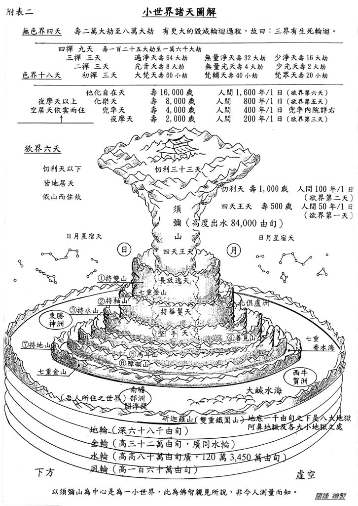

小世界諸天圖解

【三千大千世界】
古代印度人的宇宙观。又名三千世界、一大三千大千界或一大三千世界。指由小、中、大等三种‘千世界’所成的世界。《俱舍论》卷十一（大正29．61a）：‘四大洲日月，苏迷卢欲天，梵世各一千，名一小千界，此小千千倍，说名一中千，此千倍大千，皆同一成坏。’以须弥山为中心，上自色界初禅，下至大地底下的风轮，其间包括四大洲、日、月、欲界六天及色界梵世天等为一小世界。一千个小世界，名一小千世界。
《长阿含经》卷十八谓：一小千世界中有千日月、千须弥山王、四千天下、四千大天下、四千海水、四千大海、四千龙、四千大龙、四千金翅鸟、四千大金翅鸟、四千恶道、四千大恶道、四千王、四千大王、七千大树、八千大泥■、十千大山、千阎罗王、千四天王、千忉利天、千焰摩天、千兜率天、千化自在天、千他化自在天、千梵天。
一千个小千世界，为一中千世界。一中千世界有百万日月、百万须弥山、百万四天下、百万六欲天、百万初禅天和千个二禅天。中千世界一千个，称为大千世界。一大千世界中有百亿日月、百亿须弥山、百亿四天下、百亿六欲天、百亿初禅天、百亿二禅天及一千个三禅天。据经典所述，此三千大千世界为一佛所化之土，故又称一佛国。
上述由小千、中千辗转集成的大千世界，谓之‘三千世界’，或‘三千大千世界’。是单指由小、中、大三个‘千世界’而言，并不是指三千个大千世界。
如以近代之世界观来衡量，三千大千世界略如下表：
太阳系Ｘ1000＝小千世界
小千世界Ｘ1000＝中千世界
中千世界Ｘ1000＝大千世界（亦即三千大千世界）
此外，根据近人的推算，此三千大千世界实际上应是指十亿，而不是百亿个世界。
◎附：《显扬圣教论》卷一（摘录）
三千世界者：(一)小千世界，(二)中千世界，(三)大千世界。谓一日月之所照临，名一世界。如是千世界中，有千日月，千苏迷卢山王，千南赡部洲，千东毗提诃洲，千西瞿陀尼洲，千北拘卢洲，千四大王众天，千三十三天，千夜摩天，千睹史多天，千乐化天，千他化自在天，千梵世天，合名第一小千世界。复千小千世界，名为第二中千世界。复千中千世界，名为第三大千世界。问：何因缘故，小千世界，名为卑小？答：犹如特牛，断去两角。以缺减故，名为卑小。如是梵世以下，其中所有千世界，不如上地，故名卑小。如是三千世界，三灾所坏，谓火水风灾。
〔参考资料〕 《杂阿含经》卷十六、卷十九；《增一阿含经》卷九；《大楼炭经》卷一；《起世经》卷一；《起世因本经》卷一；《大毗婆沙论》卷一三四；《大智度论》卷七、卷九；《瑜伽师地论》卷二；《顺正理论》卷三十一。